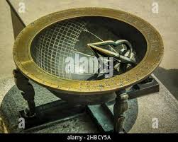
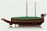

Korean History
고등학교 1학년 · 한국사
조선시대 과학과 발명
조선시대 과학과 발명
✦ 목차
조선시대 과학과 발명
◆ 시대 배경
조선 전기 과학 발전의 토양
세종대왕 재위기(1418–1450)를 중심으로 조선은 독자적인 과학 기술을 발전시켰습니다. 왕실의 적극적 후원과 실용주의 정신이 핵심 동력이었습니다.
왕실 주도 과학
세종은 집현전과 함께 천문·농업 기술을 체계적으로 연구
실용주의 전통
백성의 생활 개선을 위한 과학 기술 발전에 집중
조선시대 과학과 발명
◆ 장영실
조선 최고의 발명가

주요 업적
- 자격루(자동 물시계) 제작
- 앙부일구(해시계) 발명
- 측우기 원형 설계에 기여
조선시대 과학과 발명
◆ 자격루
세계적 수준의 자동 물시계
⏰
이미지를 불러올 수 없습니다
자격루 — 1434년 장영실이 제작한 자동 물시계
조선시대 과학과 발명
◆ 측우기
세계 최초의 우량계

☔
이미지를 불러올 수 없습니다
측우기 — 1441년, 세계 최초의 강우량 측정 기구
조선시대 과학과 발명
◆ 혼천의
천체 관측 기구
혼천의란?
- 천체의 위치를 관측하는 기구
- 동양 천문학의 핵심 도구
- 조선 시대 독자 개량 모델 제작
조선시대 과학과 발명
◆ 거북선
이순신 장군의 전투함

⛵
이미지를 불러올 수 없습니다
거북선 — 임진왜란 당시 활약한 조선의 전투선
조선시대 과학과 발명
◆ 조선 과학의 특징
실용주의
농업, 기상 등 백성의 생활에 직결되는 분야 연구
왕실 후원
세종대왕의 적극적인 과학 기술 투자와 인재 양성
중국 기술 수용
원·명의 천문학과 수학을 받아들여 독자적으로 발전
독자적 발전
한글, 측우기 등 세계에서 유일한 독자 발명품 탄생
조선시대 과학과 발명
◆ 토론 주제
조선 과학과 현대를 연결하여 생각하기
-
①
세종의 리더십과 현대 과학 정책
왕실 주도의 과학 투자는 오늘날 정부 R&D 정책과 어떻게 비교할 수 있을까?
-
②
실용주의 과학의 가치
백성의 삶을 개선하기 위한 과학은 현대의 어떤 분야와 연결되는가?
-
③
과학 유산의 보존
조선의 과학 유산을 어떻게 보존하고 알릴 수 있을지 방법을 제안하라.
조선시대 과학과 발명
◆ 핵심 수치
1441
측우기 발명 연도
30+
세종 재위 기간(년)
200
유럽보다 앞선 강우 측정(년)
조선의 과학은 왕실 주도, 실용주의, 독자적 발전이라는 세 가지 특징을 갖고 있으며, 이는 현대 한국 과학 기술의 밑바탕이 되었습니다.
조선시대 과학과 발명
감사합니다
조선의 과학 정신을 기억합시다
참고 자료
전상운, 『한국과학사』 | 국립중앙박물관 과학 유물 컬렉션